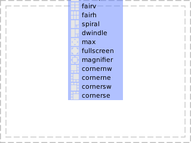
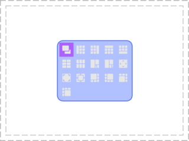
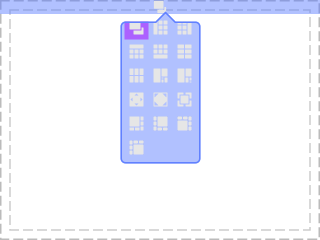
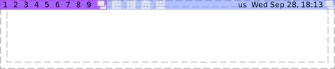

Class awful.widget.layoutlist
Display the available client layouts for a screen.
This is what the layoutlist looks like by default with a vertical layout:

awful.popup {
widget = awful.widget.layoutlist {
screen = 1,
base_layout = wibox.layout.flex.vertical
},
maximum_height = #awful.layout.layouts * 24,
minimum_height = #awful.layout.layouts * 24,
placement = awful.placement.centered,
}
In the second example, it is shown how to create a popup in the center of the screen:

local ll = awful.widget.layoutlist { base_layout = wibox.widget { spacing = 5, forced_num_cols = 5, layout = wibox.layout.grid.vertical, }, widget_template = { { { id = 'icon_role', forced_height = 22, forced_width = 22, widget = wibox.widget.imagebox, }, margins = 4, widget = wibox.container.margin, }, id = 'background_role', forced_width = 24, forced_height = 24, shape = gears.shape.rounded_rect, widget = wibox.container.background, }, } local layout_popup = awful.popup { widget = wibox.widget { ll, margins = 4, widget = wibox.container.margin, }, border_color = beautiful.border_color, border_width = beautiful.border_width, placement = awful.placement.centered, ontop = true, visible = false, shape = gears.shape.rounded_rect } -- Make sure you remove the defaultMod4+SpaceandMod4+Shift+Space-- keybindings before adding this. awful.keygrabber { start_callback = function() layout_popup.visible = true end, stop_callback = function() layout_popup.visible = false end, export_keybindings = true, release_event = 'release', stop_key = {'Escape', 'Super_L', 'Super_R'}, keybindings = { {{ modkey } , ' ' , function() awful.layout.set(gears.table.iterate_value(ll.layouts, ll.current_layout, 1)) end}, {{ modkey, 'Shift' } , ' ' , function() awful.layout.set(gears.table.iterate_value(ll.layouts, ll.current_layout, -1), nil) end}, } }
This example extends ‘awful.widget.layoutbox’ to show a layout list popup:

-- Normally you would use your existing bars, but for this example, we add one local lb = awful.widget.layoutbox(screen[1]) local l = wibox.layout.align.horizontal(nil, lb, nil) l.expand = 'outside' awful.wibar { widget = l } local p = awful.popup { widget = wibox.widget { awful.widget.layoutlist { source = awful.widget.layoutlist.source.default_layouts, screen = 1, base_layout = wibox.widget { spacing = 5, forced_num_cols = 3, layout = wibox.layout.grid.vertical, }, widget_template = { { { id = 'icon_role', forced_height = 22, forced_width = 22, widget = wibox.widget.imagebox, }, margins = 4, widget = wibox.container.margin, }, id = 'background_role', forced_width = 24, forced_height = 24, shape = gears.shape.rounded_rect, widget = wibox.container.background, }, }, margins = 4, widget = wibox.container.margin, }, preferred_anchors = 'middle', border_color = beautiful.border_color, border_width = beautiful.border_width, shape = gears.shape.infobubble, } p:bind_to_widget(lb)
This example shows how to add a layout subset to the default wibar:

wb:setup {
layout = wibox.layout.align.horizontal,
{ -- Left widgets
mytaglist,
awful.widget.layoutlist {
screen = 1,
style = {
disable_name = true,
spacing = 3,
},
source = function() return {
awful.layout.suit.floating,
awful.layout.suit.tile,
awful.layout.suit.tile.left,
awful.layout.suit.tile.bottom,
awful.layout.suit.tile.top,
} end
},
layout = wibox.layout.fixed.horizontal,
},
mytasklist, -- Middle widget
{ -- Right widgets
layout = wibox.layout.fixed.horizontal,
mykeyboardlayout,
mytextclock,
mylayoutbox,
},
}
Info:
- Copyright: 2010, 2018 Emmanuel Lepage Vallee
- Author: Emmanuel Lepage Vallee <[email protected]>
Functions
| awful.widget.layoutlist (args) | Create a layout list. |
Object properties
| base_layout | The layoutlist default widget layout. |
| widget_template | The delegate widget template. |
| screen | The layoutlist screen. |
| source | A function that returns the list of layout to display. |
| filter | The layoutlist filter function. |
| buttons | The layoutlist buttons. |
| layouts | The currenly displayed layouts. |
| current_layout | The currently selected layout. |
| forced_height | Force a widget height. |
| forced_width | Force a widget width. |
| opacity | The widget opacity (transparency). |
| visible | The widget visibility. |
Signals
| widget::layout_changed | When the layout (size) change. |
| widget::redraw_needed | When the widget content changed. |
| button::press | When a mouse button is pressed over the widget. |
| button::release | When a mouse button is released over the widget. |
| mouse::enter | When the mouse enter a widget. |
| mouse::leave | When the mouse leave a widget. |
Theme variables
| beautiful.layoutlist_fg_normal | The default foreground (text) color. |
| beautiful.layoutlist_bg_normal | The default background color. |
| beautiful.layoutlist_fg_selected | The selected layout foreground (text) color. |
| beautiful.layoutlist_bg_selected | The selected layout background color. |
| beautiful.layoutlist_disable_icon | Disable the layout icons (only show the name label). |
| beautiful.layoutlist_disable_name | Disable the layout name label (only show the icon). |
| beautiful.layoutlist_font | The layoutlist font. |
| beautiful.layoutlist_align | The selected layout alignment. |
| beautiful.layoutlist_font_selected | The selected layout title font. |
| beautiful.layoutlist_spacing | The space between the layouts. |
| beautiful.layoutlist_shape | The default layoutlist elements shape. |
| beautiful.layoutlist_shape_border_width | The default layoutlist elements border width. |
| beautiful.layoutlist_shape_border_color | The default layoutlist elements border color. |
| beautiful.layoutlist_shape_selected | The selected layout shape. |
| beautiful.layoutlist_shape_border_width_selected | The selected layout border width. |
| beautiful.layoutlist_shape_border_color_selected | The selected layout border color. |
List source functions
| awful.widget.layoutlist.source.for_screen | The layout list for the first selected tag of a screen. |
| awful.widget.layoutlist.source.current_screen | The layouts available for the first selected tag of awful.screen.focused(). |
| awful.widget.layoutlist.source.default_layouts | The default layout list. |
Methods
| awful.widget.layoutlist:get_all_children () | Get all direct and indirect children widgets. |
| awful.widget.layoutlist:setup (args) | Set a declarative widget hierarchy description. |
| awful.widget.layoutlist:buttons (_buttons) | Set/get a widget’s buttons. |
| awful.widget.layoutlist:emit_signal_recursive (signal_name, ...) | Emit a signal and ensure all parent widgets in the hierarchies also forward the signal. |
| awful.widget.layoutlist:emit_signal (name, ...) | Emit a signal. |
| awful.widget.layoutlist:connect_signal (name, func) | Connect to a signal. |
| awful.widget.layoutlist:weak_connect_signal (name, func) | Connect to a signal weakly. |
Functions
Methods- awful.widget.layoutlist (args)
-
Create a layout list.
- args
- layout widget The widget layout (not to be confused with client layout).
- buttons
table
The list of
awful.buttons. (default nil) - source function A function to generate the list of layouts. (default awful.widget.layoutlist.source.for_screen)
- widget_template table A custom widget to be used for each action. (optional)
- screen screen A screen (default ascreen.focused())
- buttons
table
The list of
awful.buttons. (default nil) - style table Extra look and feel parameters (default {})
- style.disable_icon boolean
- style.disable_name boolean
- style.fg_normal string or pattern
- style.bg_normal string or pattern
- style.fg_selected string or pattern
- style.bg_selected string or pattern
- style.font string
- style.font_selected string
- style.align string left, right or center
- style.spacing number
- style.shape gears.shape
- style.shape_border_width number
- style.shape_border_color string or pattern
- style.shape_selected gears.shape
- style.shape_border_width_selected string or pattern
- style.shape_border_color_selected string or pattern
Returns:
-
widget
The action widget.
- args
Object properties
- base_layout
-
The layoutlist default widget layout.
If no layout is specified, a wibox.layout.fixed.vertical will be created
automatically.
Type:
- widget
See also:
- widget_template
-
The delegate widget template.
Type:
- table
- screen
-
The layoutlist screen.
Type:
- screen
- source
-
A function that returns the list of layout to display.
Type:
- function (default awful.widget.layoutlist.source.for_screen)
- filter
-
The layoutlist filter function.
Type:
- function (default awful.widget.layoutlist.source.for_screen)
- buttons
-
The layoutlist buttons.
The default is:
gears.table.join( awful.button({ }, 1, awful.layout.set) )Type:
- table
- layouts
-
The currenly displayed layouts.
Type:
- table
- current_layout
-
The currently selected layout.
Type:
- layout
- forced_height
-
Force a widget height.
Type:
- height
number or nil
The height (
nilfor automatic)
- height
number or nil
The height (
- forced_width
-
Force a widget width.
Type:
- width
number or nil
The width (
nilfor automatic)
- width
number or nil
The width (
- opacity
-
The widget opacity (transparency).
Type:
- opacity number The opacity (between 0 and 1) (default 1)
- visible
-
The widget visibility.
Type:
- boolean
Signals
- widget::layout_changed
-
When the layout (size) change.
This signal is emitted when the previous results of
:layout()and:fit()are no longer valid. Unless this signal is emitted,:layout()and:fit()must return the same result when called with the same arguments.See also:
- widget::redraw_needed
-
When the widget content changed.
This signal is emitted when the content of the widget changes. The widget will
be redrawn, it is not re-layouted. Put differently, it is assumed that
:layout()and:fit()would still return the same results as before.See also:
- button::press
-
When a mouse button is pressed over the widget.
Arguments:
- lx number The horizontal position relative to the (0,0) position in the widget.
- ly number The vertical position relative to the (0,0) position in the widget.
- button number The button number.
- mods table The modifiers (mod4, mod1 (alt), Control, Shift)
- find_widgets_result The entry from the result of
wibox.drawable:find_widgets for the position that the mouse hit.
- drawable wibox.drawable The drawable containing the widget.
- widget widget The widget being displayed.
- hierarchy wibox.hierarchy The hierarchy managing the widget’s geometry.
- x number An approximation of the X position that the widget is visible at on the surface.
- y number An approximation of the Y position that the widget is visible at on the surface.
- width number An approximation of the width that the widget is visible at on the surface.
- height number An approximation of the height that the widget is visible at on the surface.
- widget_width number The exact width of the widget in its local coordinate system.
- widget_height number The exact height of the widget in its local coordinate system.
See also:
- button::release
-
When a mouse button is released over the widget.
Arguments:
- lx number The horizontal position relative to the (0,0) position in the widget.
- ly number The vertical position relative to the (0,0) position in the widget.
- button number The button number.
- mods table The modifiers (mod4, mod1 (alt), Control, Shift)
- find_widgets_result The entry from the result of
wibox.drawable:find_widgets for the position that the mouse hit.
- drawable wibox.drawable The drawable containing the widget.
- widget widget The widget being displayed.
- hierarchy wibox.hierarchy The hierarchy managing the widget’s geometry.
- x number An approximation of the X position that the widget is visible at on the surface.
- y number An approximation of the Y position that the widget is visible at on the surface.
- width number An approximation of the width that the widget is visible at on the surface.
- height number An approximation of the height that the widget is visible at on the surface.
- widget_width number The exact width of the widget in its local coordinate system.
- widget_height number The exact height of the widget in its local coordinate system.
See also:
- mouse::enter
-
When the mouse enter a widget.
Arguments:
- find_widgets_result The entry from the result of
wibox.drawable:find_widgets for the position that the mouse hit.
- drawable wibox.drawable The drawable containing the widget.
- widget widget The widget being displayed.
- hierarchy wibox.hierarchy The hierarchy managing the widget’s geometry.
- x number An approximation of the X position that the widget is visible at on the surface.
- y number An approximation of the Y position that the widget is visible at on the surface.
- width number An approximation of the width that the widget is visible at on the surface.
- height number An approximation of the height that the widget is visible at on the surface.
- widget_width number The exact width of the widget in its local coordinate system.
- widget_height number The exact height of the widget in its local coordinate system.
See also:
- find_widgets_result The entry from the result of
wibox.drawable:find_widgets for the position that the mouse hit.
- mouse::leave
-
When the mouse leave a widget.
Arguments:
- find_widgets_result The entry from the result of
wibox.drawable:find_widgets for the position that the mouse hit.
- drawable wibox.drawable The drawable containing the widget.
- widget widget The widget being displayed.
- hierarchy wibox.hierarchy The hierarchy managing the widget’s geometry.
- x number An approximation of the X position that the widget is visible at on the surface.
- y number An approximation of the Y position that the widget is visible at on the surface.
- width number An approximation of the width that the widget is visible at on the surface.
- height number An approximation of the height that the widget is visible at on the surface.
- widget_width number The exact width of the widget in its local coordinate system.
- widget_height number The exact height of the widget in its local coordinate system.
See also:
- find_widgets_result The entry from the result of
wibox.drawable:find_widgets for the position that the mouse hit.
Theme variables
- beautiful.layoutlist_fg_normal
-
The default foreground (text) color.
Type:
- fg_normal string or pattern (default nil)
See also:
- beautiful.layoutlist_bg_normal
-
The default background color.
Type:
- bg_normal string or pattern (default nil)
See also:
- beautiful.layoutlist_fg_selected
-
The selected layout foreground (text) color.
Type:
- fg_selected string or pattern (default nil)
See also:
- beautiful.layoutlist_bg_selected
-
The selected layout background color.
Type:
- bg_selected string or pattern (default nil)
See also:
- beautiful.layoutlist_disable_icon
-
Disable the layout icons (only show the name label).
Type:
- layoutlist_disable_icon boolean (default false)
- beautiful.layoutlist_disable_name
-
Disable the layout name label (only show the icon).
Type:
- layoutlist_disable_name boolean (default false)
- beautiful.layoutlist_font
-
The layoutlist font.
Type:
- font string (default nil)
- beautiful.layoutlist_align
-
The selected layout alignment.
Type:
- align string left, right or center (default left)
- beautiful.layoutlist_font_selected
-
The selected layout title font.
Type:
- font_selected string (default nil)
- beautiful.layoutlist_spacing
-
The space between the layouts.
Type:
- spacing number The spacing between tasks. (default 0)
- beautiful.layoutlist_shape
-
The default layoutlist elements shape.
Type:
- shape gears.shape (default nil)
- beautiful.layoutlist_shape_border_width
-
The default layoutlist elements border width.
Type:
- shape_border_width number (default 0)
- beautiful.layoutlist_shape_border_color
-
The default layoutlist elements border color.
Type:
- shape_border_color string or color (default nil)
See also:
- beautiful.layoutlist_shape_selected
-
The selected layout shape.
Type:
- shape_selected gears.shape (default nil)
- beautiful.layoutlist_shape_border_width_selected
-
The selected layout border width.
Type:
- shape_border_width_selected number (default 0)
- beautiful.layoutlist_shape_border_color_selected
-
The selected layout border color.
Type:
- shape_border_color_selected string or color (default nil)
See also:
List source functions
- awful.widget.layoutlist.source.for_screen
-
The layout list for the first selected tag of a screen.
- s screen The screen.
- awful.widget.layoutlist.source.current_screen
-
The layouts available for the first selected tag of
awful.screen.focused(). - awful.widget.layoutlist.source.default_layouts
-
The default layout list.
See also:
Methods
- awful.widget.layoutlist:get_all_children ()
-
Get all direct and indirect children widgets.
This will scan all containers recursively to find widgets
Warning: This method it prone to stack overflow id the widget, or any of its
children, contain (directly or indirectly) itself.
Returns:
-
table
The children
- awful.widget.layoutlist:setup (args)
-
Set a declarative widget hierarchy description.
See The declarative layout system
- args An array containing the widgets disposition
- awful.widget.layoutlist:buttons (_buttons)
-
Set/get a widget’s buttons.
- _buttons The table of buttons that should bind to the widget.
- awful.widget.layoutlist:emit_signal_recursive (signal_name, ...)
-
Emit a signal and ensure all parent widgets in the hierarchies also
forward the signal. This is useful to track signals when there is a dynamic
set of containers and layouts wrapping the widget.
- signal_name string
- ... Other arguments
- awful.widget.layoutlist:emit_signal (name, ...)
-
Emit a signal.
- name string The name of the signal.
- ... Extra arguments for the callback functions. Each connected function receives the object as first argument and then any extra arguments that are given to emit_signal().
- awful.widget.layoutlist:connect_signal (name, func)
-
Connect to a signal.
- name string The name of the signal.
- func function The callback to call when the signal is emitted.
- awful.widget.layoutlist:weak_connect_signal (name, func)
-
Connect to a signal weakly.
This allows the callback function to be garbage collected and automatically disconnects the signal when that happens.
Warning: Only use this function if you really, really, really know what you are doing.
- name string The name of the signal.
- func function The callback to call when the signal is emitted.